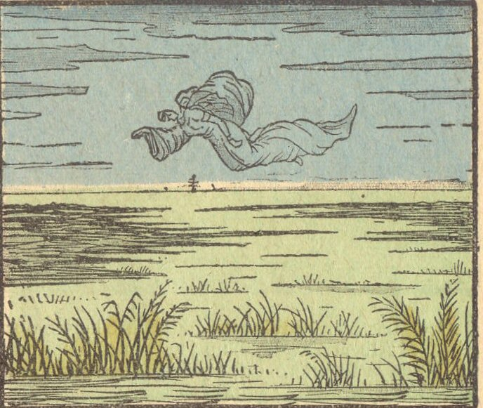

Saturday, September the 12th, 2009
back to: title, date or indexes
I keep trying to warn you. Over and over again I tell you to beware of the eerie marshes, to shun them, for you know not what spooky horrors lie in wait for you there, but you scoff, you say “Pshaw!, Mr Key, you and your blather about the marshes!”, and you mince off in your wellington boots, as only you could mince in wellingtons, off towards the eerie marshes at dusk, without a care, puffing on your expensive herbal cigarette, no map, no sou'wester, not even a lantern, you ignore my beseeching to at least take a hound with you, a hound with sharp fangs and brutish musculature, for protection, but no, you think me an oaf and an idiot, and I watch as you vanish into the distance, swallowed by the mist that hangs in the air and grows thicker and thicker the closer you get to the eerie marshes, until, suddenly, it clears, and you stop, and stagger, and feel a pang of ice creep down your spine, for there hovering above the eerie marshes is an eerie phantom, inexplicably menacing, and in the voice of death it intones verses 16 and 17 from chapter 36 of the Book of Isaiah, to wit, “Drink ye every one the waters of his own cistern, until I come and take you away”, and you realise with horror that just before you put on your wellington boots that is precisely what you were doing, drinking the waters of your own cistern, though I implored you not to, I fell to my knees and begged you not to drink those waters, and you sneered at me, and gulped them down, from your cistern, and now the wraith of the marshes has come to take you away, just as I told you it would, and you can struggle and scream and vomit up the waters of your cistern, but it will avail you not, you will be taken away, away, away, leaving only those empty abandoned boots at the edge of the marshes, that none shall ever dare go and fetch, and they will rot slowly in the mist, and all trace of you will be gone.

I am indebted to Agence Eureka for this hyperrealist illustration of the eerie marshes.
Hooting Yard on the Air, December the 17th, 2009 : “That Awful Mess At Sludge Hall Farm” (starts around 07:36)